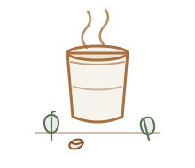

The House Signature
Cardamom Cortado ★ house
Our defining cup — a double ristretto cut with silky steamed milk and freshly cracked green cardamom. Warm, aromatic, a little unexpected. Served short, in a glass.
$6.00
Espresso
Pulled to order-
Espresso $3.50
A double shot of our house blend — cocoa, toasted almond, a clean finish.
-
Macchiato $4.00
Espresso marked with a spoonful of textured milk.
-
Cortado $4.25
Equal parts espresso and warm milk, served short.
-
Cappuccino $4.75
A balanced cup, dense foam, dusted with cocoa on request.
-
Flat White $5.00
Ristretto base, velvet microfoam, no fuss.
Slow Brew
Filter & batch-
Batch Brew $3.75
Today's filter roast, brewed by the pot and poured all day.
-
Pour-Over $5.50
Hand-brewed, one cup at a time — this week's origin below.
This week: Ethiopia · Guji · washed — stone fruit, jasmine
-
Aeropress $5.25
A rounder, fuller cup — ask the barista what's on the bench.
Milk & Specialty
Oat +$0.50-
Café Latte $5.00
Long and mellow, the everyday cup.
-
Cardamom Latte $5.75
Freshly ground cardamom folded through steamed milk and espresso.
-
Mocha $5.50
Dark Lebanese chocolate, espresso, steamed milk.
-
Spiced Chai Latte $5.25
House-brewed black tea with ginger, clove, and cinnamon.
Cold
Over ice-
Cold Brew V $5.00
Steeped sixteen hours — low acidity, smooth, naturally sweet.
-
Iced Latte $5.25
Double shot over cold milk and ice.
-
Espresso Tonic $5.75
Tonic, ice, a wedge of orange, and a fresh shot on top.
Tea & Tisanes
Steeped fresh-
Fresh Mint Tea $3.75
A fat bunch of mint, steeped whole. Honey on the side.
-
Zhourat $4.00
The Lebanese mountain blend — chamomile, rose, and wild herbs.
-
White Coffee $3.25
Orange-blossom water served hot. No coffee, all calm.
Pastries
Baked in-house-
Butter Croissant $4.25
Laminated over three days, baked each morning.
-
Pain au Chocolat $4.75
Two batons of dark chocolate in flaky pastry.
-
Pistachio & Orange Cake $5.50
A moist slice with Aleppo pistachio and bright citrus syrup.
-
Date & Tahini Cookie V $3.50
Chewy, lightly salted, made with local dates.